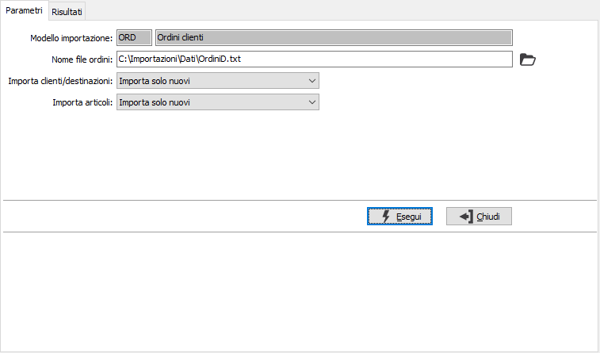
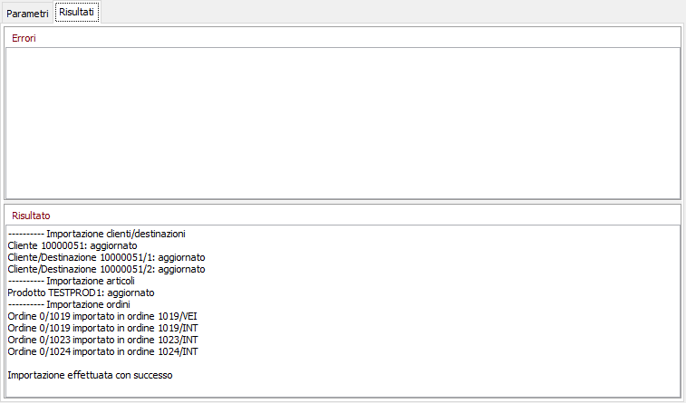

Se
abilitata
la pianificazione batch
sarà visibile il pulsante Pianifica.
Se
abilitata
la pianificazione batch
sarà visibile il pulsante Pianifica.Importazione ordini
La procedura necessita del modulo di Importazione dati di cui utilizza Modelli ed Associazione codici; consente di importare i dati relativi ad ordini clienti, comprensivi di dettaglio varianti, ubicazioni e lotti, provenienti da altre applicazioni. In questa fase è possibile effettuare l'importazione anche di clienti, destinazioni ed articoli, se presenti i modelli di importazione relativi e se indicato nelle relative caselle a discesa di effettuare l'importazione dei soli codici nuovi o di tutti i codici; nel caso in cui i modelli di importazione di clienti/destinazioni e/o prodotti non fossero presenti le relative caselle sarebbero disabilitate. Il modello di importazione viene selezionato in automatico e se non è presente non sarà possibile effettuare l'importazione; il nome del file viene proposto dal modello ed possibile modificarlo, in questo caso viene sempre dato un avviso per ricordare all'operatore che il file selezionato deve essere congruente con quanto definito nel modello di importazione.

La pressione del pulsante Esegui, seguita da una richiesta di conferma, dà inizio all'operazione di import e nella pagina risultati saranno visualizzati eventuali errori nel riquadro Errori e le segnalazioni dell'avanzamento della procedura nel riquadro Risultato.
La procedura di importazione completa di anagrafiche è suddivisa in tre fasi distinte:
Le prime due fasi possono non essere effettuate, eventuali errori interrompono la procedura, ma se ad esempio la fase di importazione clienti è terminata e si verifica un errore in fase di importazione ordini, le anagrafiche clienti saranno comunque importate. Tramite i bottoni presenti nella toolbar o tramite gli appositi tasti funzione, è possibile stampare la pagina dei risultati; se l'importazione è andata a buon fine e si cerca di uscire viene richiesta una conferma per evitare di perdere il contenuto dei risultati prima di averlo consultato o stampato.

Se
abilitata
la pianificazione batch
sarà visibile il pulsante Pianifica.